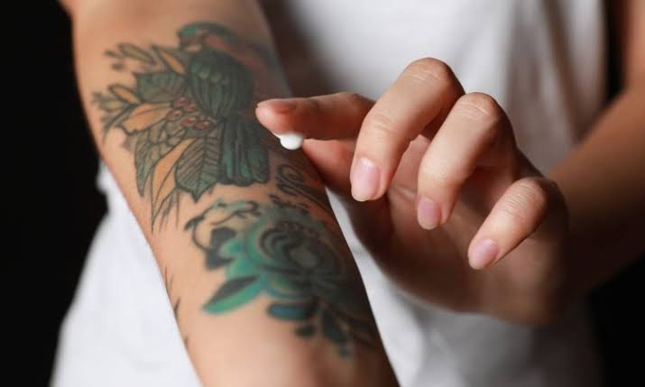
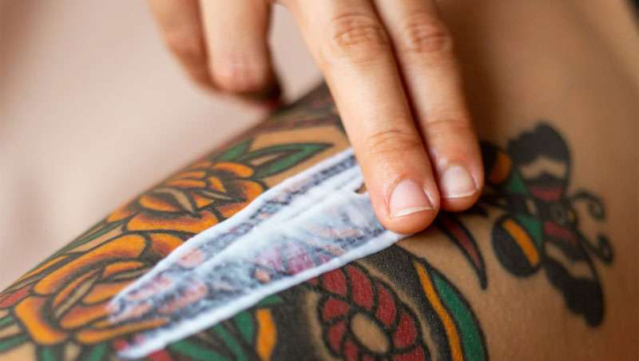
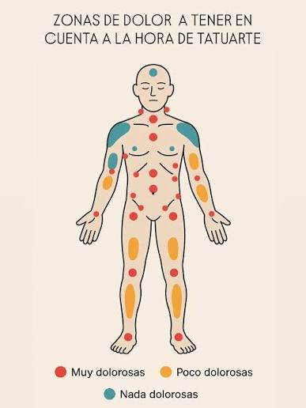

Mantén el vendaje puesto el tiempo que indique tu tatuador. Lava el
tatuaje dos veces al día con agua tibia y jabón neutro, sin frotar,
y sécalo a toques con papel. Aplica una capa fina de crema
recomendada después de cada lavado para hidratar.
No rasques aunque pique, y no arranques las costras ni la piel que
se descame. Evita mojarlo en piscinas, mar, bañeras o saunas durante
al menos un mes. Usa ropa holgada de algodón que no roce la zona.
Protégelo del sol con FPS 50+ una vez que esté completamente
cicatrizado.

La protección solar en tatuajes es para siempre
Una vez que el tatuaje esté completamente curado (aproximadamente en
un mes), adquiere el hábito de protegerlo del sol siempre que lo
expongas. Usa un protector solar de alto factor de protección (FPS
50+) para mantener los colores vibrantes y evitar el envejecimiento
prematuro de la tinta y la piel.

¿Duele hacerse un tatuaje? Lo que debes saber antes de tu primera sesión
La sensación varía según la zona del cuerpo, el tamaño del diseño y
tu propio umbral del dolor. Las áreas con más terminaciones
nerviosas o piel fina, como costillas, muñecas, tobillos o cuello,
suelen ser más sensibles, mientras que brazos, muslos y espalda alta
tienden a tolerarse mejor.
Durante la sesión sentirás una mezcla de vibración, calor y un
pinchazo constante. Para hacerla más llevadera, descansa bien la
noche anterior, come algo ligero antes de venir, mantente hidratado
y evita alcohol o cafeína en exceso. Recuerda que puedes pedir
pausas cuando lo necesites: tu comodidad también es parte del
proceso.

Cómo elegir tu primer tatuaje: ideas, tamaño y ubicación
Antes de decidirte, piensa en el significado que quieres darle, pero
también en cómo envejecerá con el tiempo. Los diseños con líneas
finas y detalles muy pequeños tienden a perder definición, mientras
que las piezas con buen contraste y tamaños medianos se mantienen
mejor a largo plazo.
La ubicación también importa: considera la visibilidad que tendrá en
tu vida diaria, laboral o social, y cómo se adapta a la forma de tu
cuerpo. En Akali Tattoo trabajamos contigo en el diseño, el tamaño y
la colocación para que el resultado sea armonioso y puedas lucirlo
con orgullo durante años.